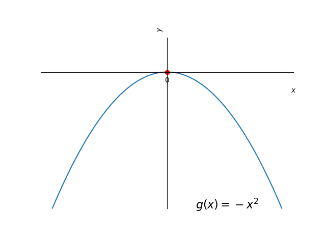
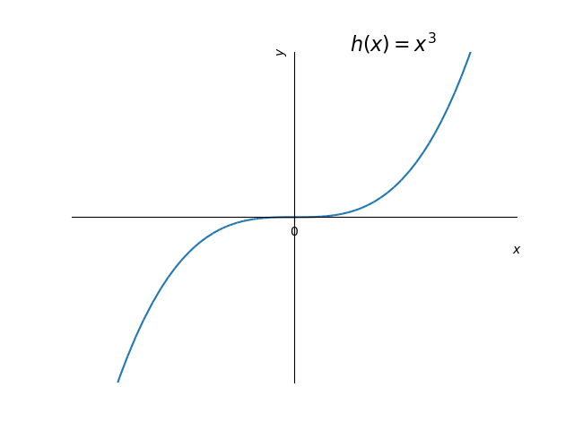

3.2 Extremos de funções
Seja uma função com domínio . Dizemos que tem o valor máximo global33 3 Também chamado de máximo absoluto. no ponto quando
| (3.41) |
para todo . Analogamente, dizemos que tem o valor mínimo global44 4 Também chamado de mínimo absoluto. no ponto quando
| (3.42) |
para todo . Em tais pontos, dizemos que a função têm seus valores extremos globais (ou extremos absolutos).
Exemplo 3.2.1.
A função tem valor mínimo global no ponto e não assume valor máximo global. A função tem valor máximo global no ponto e não assume valor mínimo global. A função não assume valores mínimo e máximo globais. Veja a Figura 3.1.
 |
 |  |
Teorema 3.2.1.
(Teorema do valor extremo55 5 Este é uma versão do chamado Teorema de Weierstrass) Se é uma função contínua em um intervalo fechado , então assume tanto um valor máximo como um valor mínimo global em .
Demonstração.
A demonstração foge dos objetivos deste texto. Caso tenha interesse, consulte [2]. ∎
Exemplo 3.2.2.
Vejamos os seguintes casos:
-
a)
A função é contínua no intervalo fechado . Assume valor mínimo global no ponto . Ainda, assume valor máximo global igual a no ponto . Veja Figura 3.2.

Figura 3.2: Esboço do gráfico de no intervalo . Veja o Exemplo 3.2.2 a). -
b)
A função é contínua no intervalo . Neste intervalo, assume valor máximo global no ponto , mas não assume valor mínimo global. Veja Figura 3.3.

Figura 3.3: Esboço do gráfico de no intervalo . Veja o Exemplo 3.2.2 b). -
c)
A função
(3.43) definida no intervalo é descontínua no ponto . Neste intervalo, assume valor mínimo global no ponto , mas não assume valor máximo global. Veja a Figura 3.4.

Figura 3.4: Esboço do gráfico de no intervalo . Veja o Exemplo 3.2.2 c).
Uma função tem um valor máximo local em um ponto interior de seu domínio, se para todo em um intervalo aberto em torno de , excluindo-se . Analogamente, tem um valor mínimo local em um ponto interior de seu domínio, se para todo em um intervalo aberto em torno de , excluindo-se . Em tais pontos, dizemos que a função têm valores extremos locais (ou relativos). Um tal ponto é chamado de ponto de máximo local ou de mínimo local, conforme o caso.
Exemplo 3.2.3.
Consideremos a função
| (3.44) |

Na Figura 3.5 temos o esboço de seu gráfico. Por inferência, temos que tem valores máximos locais nos pontos e . No ponto tem um valor mínimo local. Observamos que , e não são pontos de extremos locais desta função. No ponto , tem seu valor mínimo global. Ainda, não tem valor máximo global.
Teorema 3.2.2.
(Teorema da derivada para pontos extremos locais.) Se possui um valor extremo local em um ponto e é diferenciável neste ponto, então
| (3.45) |
Demonstração.
Vamos considerar o caso em que possui um máximo local em . Então, segue que
| (3.46) | |||
| (3.47) |
Logo, . Para o caso em que possui um mínimo local em , consulte o Exercício 3.2.6. ∎
Deste teorema, podemos concluir que uma função pode ter valores extremos em:
-
a)
pontos interiores de seu domínio onde ,
-
b)
pontos interiores de seu domínio onde não existe, ou
-
c)
pontos extremos de seu domínio.
Um ponto interior do domínio de uma função onde ou não existe, é chamado de ponto crítico da função.
Observação 3.2.1.
Uma função tem valores extremos em pontos críticos ou nos extremos de seu domínio.
Exemplo 3.2.4.
Consideramos a função discutida no Exemplo 3.2.3. No ponto , e tem valor máximo local neste ponto. Entretanto, no ponto , também temos , mas não tem valor extremo neste ponto.
No ponto , não existe e tem valor mínimo local neste ponto. No ponto, , não existe e tem valor máximo local neste ponto.
Nos extremos do domínio, temos que tem valor mínimo global no ponto , mas não tem extremo global no ponto .
Exercícios resolvidos
ER 3.2.1.
Determine os pontos extremos da função no intervalo .
Solução.
Os valores extremos de um função podem ocorrer, somente, em seus pontos críticos ou nos extremos de seu domínio. Como é diferenciável no intervalo , seus pontos críticos são pontos tais que . Para identificá-los, calculamos
| (3.48) | ||||
| (3.49) |

Desta forma, pode ter valores extremos nos ponto , e . Analisamos, então, o esboço do gráfico da função (Figura 3.6) e a seguinte tabela:
| -2 | -1 | 1 | |
|---|---|---|---|
| 0 | -1 | 3 |
Daí, podemos concluir que tem o valor mínimo global (e local) de no ponto e tem valor máximo global de no ponto .
Podemos usar o Python+SymPy para computar os pontos extremos e plotar a função. Por exemplo, com os seguintes comandos:
ER 3.2.2.
Determine os pontos extremos da função no intervalo .
Solução.
Como é diferenciável no intervalo , temos que seus pontos críticos são tais que . Neste caso, temos
| (3.50) |
é o único ponto crítico de . Entretanto, analisando o gráfico desta função (Figura 3.7) vemos que não tem valor extremo local neste ponto. Assim, seus pontos extremos só podem ocorrer nos extremos do domínio . Concluímos que é o valor mínimo global de e é seu valor máximo global.

Exercícios
Exercício 3.2.1.
Considere que uma dada função tenha o seguinte esboço de gráfico:

Determine e classifique os pontos extremos desta função.
Resp.
ponto de mínimo global; ponto de máximo local; ponto de mínimo local; ponto de máximo global.
Exercício 3.2.2.
Dada a função restrita ao intervalo , determine:
-
a)
seu(s) ponto(s) crítico(s).
-
b)
seu(s) ponto(s) extremo(s) e o(s) classifique.
-
c)
seu(s) valor(es) extremo(s) e o(s) classifique.
Resp.
a) ; b)  ponto de máximo global; ponto de mínimo local e global; c)  valor máximo global; valor mínimo local e global;
Exercício 3.2.3.
Dada a função restrita ao intervalo , determine:
-
a)
seu(s) ponto(s) crítico(s).
-
b)
seu(s) ponto(s) extremo(s) e o(s) classifique.
-
c)
seu(s) valor(es) extremo(s) e o(s) classifique.
Resp.
a) ; b)  ponto de máximo local e global; ponto de mínimo global; c)  valor máximo local e global; valor mínimo global;
Exercício 3.2.4.
Dada a função restrita ao intervalo , determine:
-
a)
seu(s) ponto(s) crítico(s).
-
b)
seu(s) ponto(s) extremo(s) e o(s) classifique.
-
c)
seu(s) valor(es) extremo(s) e o(s) classifique.
Resp.
a) ; b)  ponto de mínimo global;c)  valor mínimo global;
Exercício 3.2.5.
Dada a função restrita ao intervalo , determine:
-
a)
seu(s) ponto(s) crítico(s).
-
b)
seu(s) ponto(s) extremo(s) e o(s) classifique.
-
c)
seu(s) valor(es) extremo(s) e o(s) classifique.
Resp.
a) ; b)  ponto de mínimo global; ponto de máximo global; c)  valor mínimo global; valor máximo global;
Exercício 3.2.6.
Mostre que se tem um mínimo local em e é diferenciável neste ponto, então .
Resp.
Dica: consulte a demonstração do Teorema 3.2.2.